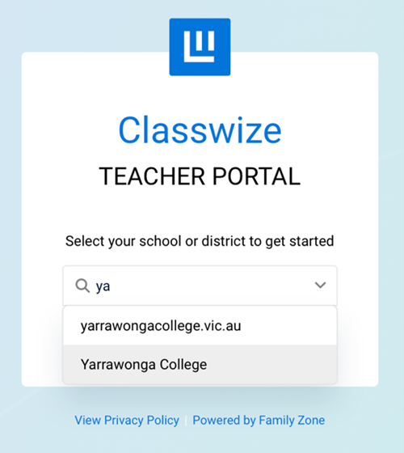
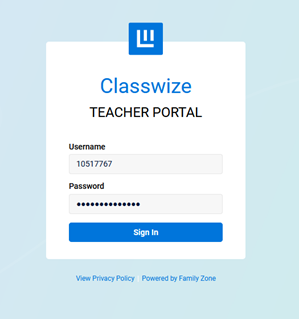
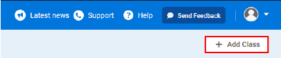
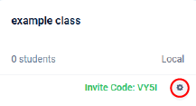
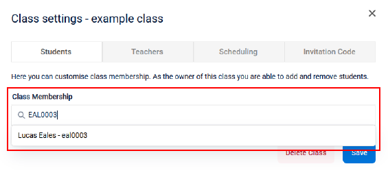
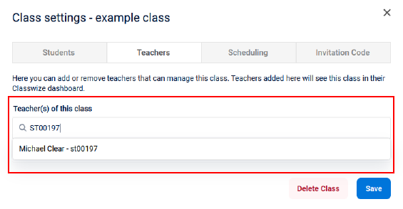

The College uses Family Zone/Linewize web filtering to monitor and filter our internet traffic. For students, YouTube is blocked by default, as are other media intensive websites/services to prevent our bandwidth being stretched to the limit. There are some industrious students who manage to find workarounds from time to time, such as hot-spotting to their phone. At other times a specific word on a page may prompt a block that you’ll need to open up. If a website is blocked by the school (not by the DET – as some are), you can provide timed student access, through the Classwize interface, but you’ll need to have Classes set up.
Select “Yarrawonga College” (not the one with .vic.au) 
Login with your T0 Number and your Network Password 
Select the “Add Class” Button in the upper right corner of the page 
Create a name for your class – This is global across the school and each name can only be used once. Please name your class with the Year Level, Subject and Teacher Code to make them unique to you. (eg Year 8 Maths – BAJ)
Leave the Switch for the “Invitation Code” off. You are able to manually add students to your class, which is recommended, just like in Google Classroom. Using the invitation code means students need to log into the Classwize system to join a class
Select “Save”.
Adding Students
Click the cog icon in the lower right corner of the class on the main menu

Search for students via their CASES21 Code (i.e. EAL0003) or name.

Once all students have been added, select “Save”
Adding Teachers
Click the cog icon in the lower right corner of the class on the main menu
Navigate to the “Teachers” menu.
Search for Teachers with their T0 or name.

Once all teachers have been added, select “Save”.
Adding Class Times
Click the cog icon in the lower right corner of the class on the main menu